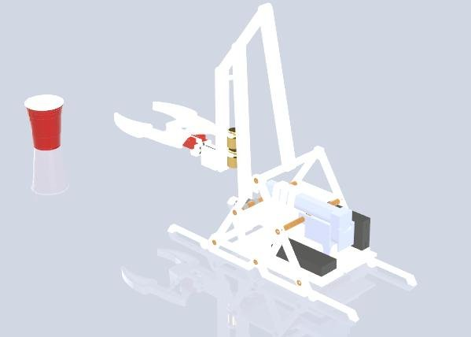
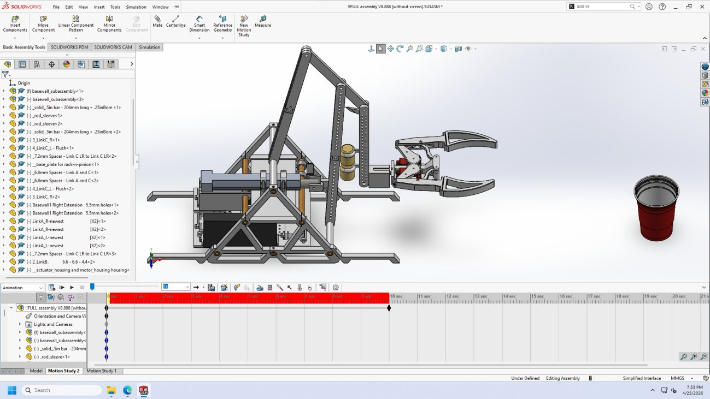
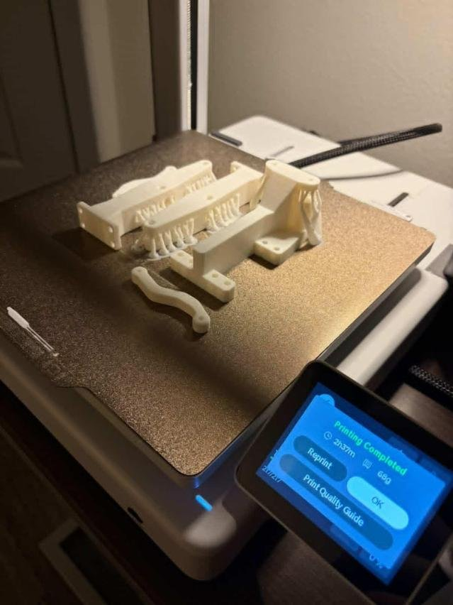
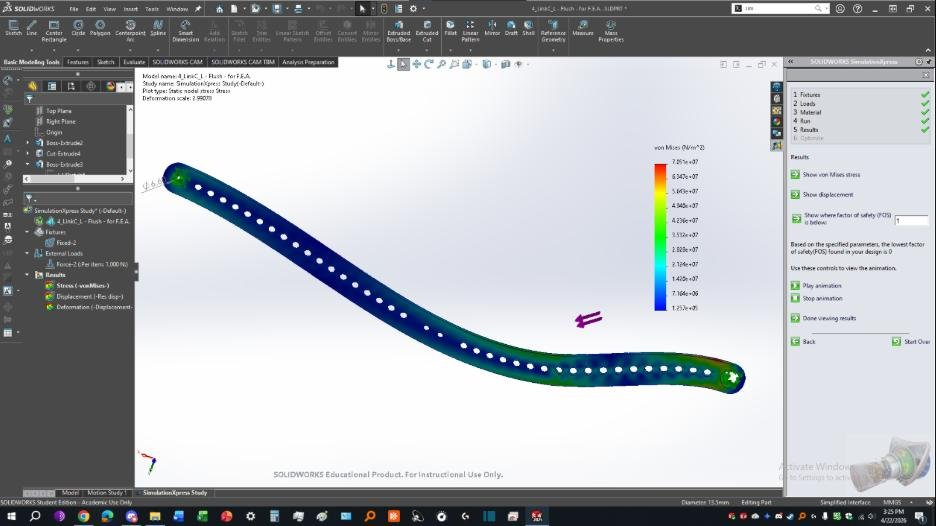
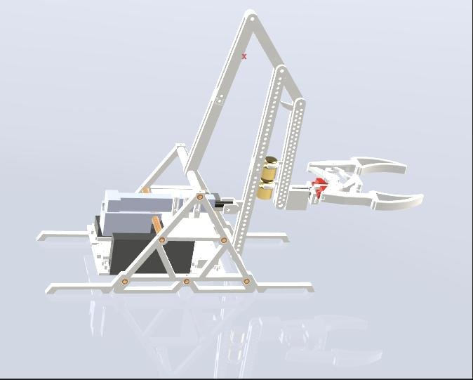
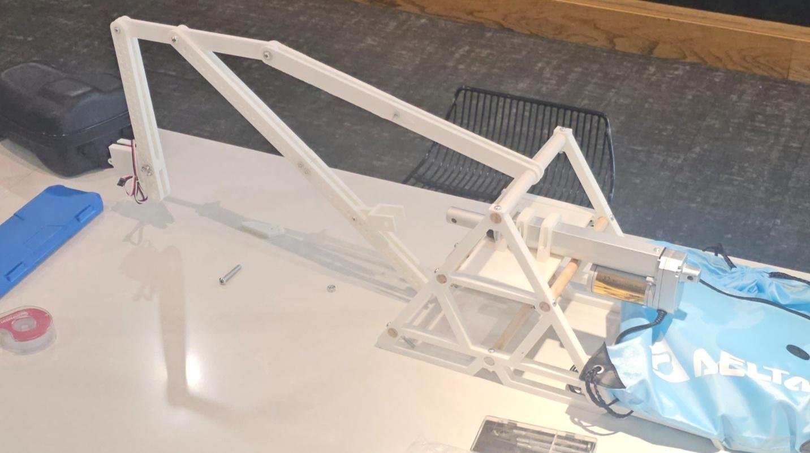
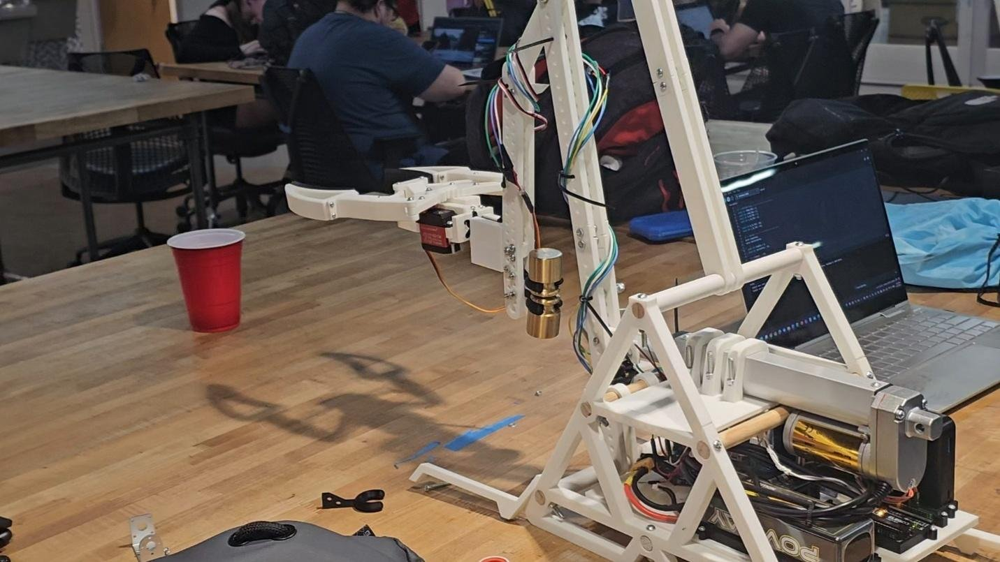
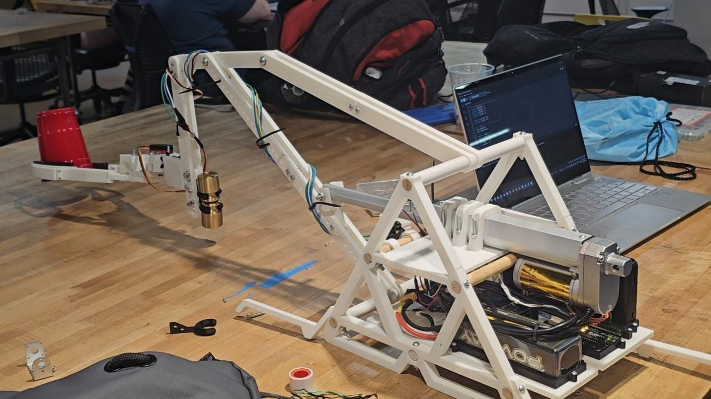
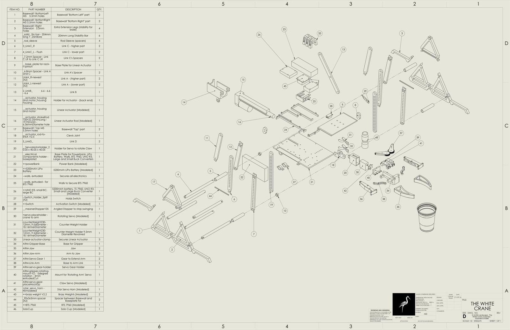
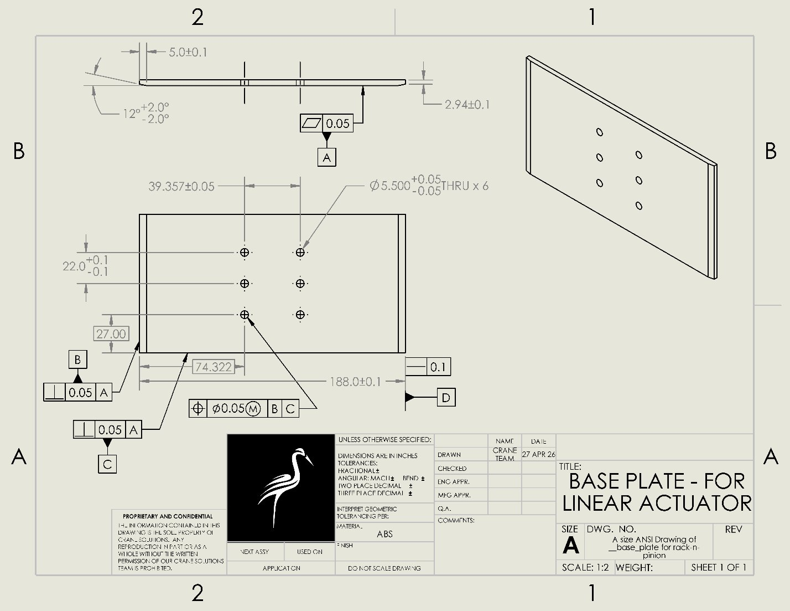

Level-Luffing Mechanical Crane
“The White Crane,” a team-led level-luffing crane that keeps its claw level through the full reach.

“The White Crane,” a team-led level-luffing crane that keeps its claw level through the full reach.
“The White Crane” was our final design project for MAE 1351, Introduction to Engineering Design (Dr. Raul Fernandez). Working in a four-person team, we designed, simulated, and fabricated a level-luffing crane: a crane whose linkage keeps its end effector level as the jib reaches in and out, instead of letting it rise and dip through the arc. We designed it in SolidWorks, ran an FEA study, and built a working 3D-printed prototype driven by a linear actuator.
I led the four-person team and did most of the design and build work. The level-luffing concept came from research I did during brainstorming, which we then adapted for our needs. I modeled every part in SolidWorks (the base frame, linkage arms, claw, actuator mounts, and the brackets and spacers), which kept the assembly consistent and let me catch fitment problems before anything was printed. I also produced the working drawings, including the assembly drawing and the detail drawings with tolerances and GD&T. I printed every part on a Bambu Lab printer (reprinting the ones that came out weak or didn’t fit), assembled the full mechanism (linkages, actuator, rack and pinion, and claw), soldered the wiring for the servos, actuator, battery, and controls, and helped write the control code that sequenced the actuator and claw.
The graded task was to flip a Solo cup autonomously. A standoff rule made it harder: the mechanism had to stay at least one foot away from the cup, so the crane had to reach in from a distance and flip the cup rather than work right next to it. Flipping the cup once within 30 seconds earned full credit. We went further: the crane flipped the cup once, then twice more in a row to return the cup to its original position, which earned bonus points.
Our main modification to the standard level-luffing design was letting the front (reaching) arm dangle, or pivot freely, as it extends forward. Extending the arm to lower the claw had been making the claw clip into the ground; allowing the arm to pivot keeps the claw level through the reach instead.


Rather than balance the crane with a counterweight, we removed it entirely and added legs to the base for stability. We also reworked the base into a more open, more cost-effective frame.
Every part was 3D-printed on a Bambu Lab printer, with weak or ill-fitting parts reprinted, then assembled into the working mechanism: linkages, the linear actuator, a rack and pinion, and the claw. The claw’s grabbers are fastened with four 6 mm M4 threaded inserts (a commercial off-the-shelf kit) for durable machine-screw threads. The servos, actuator, battery, and controls were wired and soldered in, and control code sequenced the actuator and claw so they moved in the right order.


We analyzed the link the actuator pushes on using SolidWorks Simulation. The load was applied at the 11th hole from the bottom-right, where the linear actuator acts on the link, with fixtures at the top-left (the connecting link) and the bottom-right (fixed to the base’s rod). At the actuator’s maximum output of 1000 N, the Von Mises results showed most of the part in low stress (blue/green), with a localized high-stress region at the fixed bottom-right area. That spot is the most likely to deform and the clearest candidate for reinforcement in a future revision.
The prototype did the job: it flipped the Solo cup autonomously within the time limit for full credit, then flipped it twice more in a row to return the cup to its original position for bonus points. The dangling-arm modification kept the claw level through the reach, and the legged base provided stability in place of a counterweight. The SolidWorks FEA confirmed the actuated link carries the actuator’s 1000 N maximum load with stress concentrated at the fixed end, the spot we’d reinforce in a future revision.






Covers the overview, design rationale, the FEA study, and the engineering drawing package. The roster page listing teammates' student ID numbers has been removed for privacy.